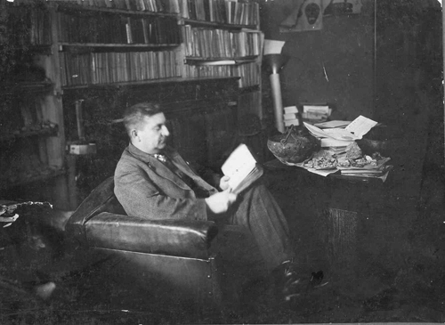

Muzeul Județean Mureș a fost înființat pentru a conserva și valorifica patrimoniul cultural și istoric al județului Mureș. De-a lungul timpului, muzeul a reunit colecții importante de etnografie, arheologie, istorie și artă, reflectând evoluția comunităților locale. Clădirea muzeului și expozițiile sale au fost dezvoltate continuu, adaptându-se cerințelor moderne de conservare și prezentare a patrimoniului. Astăzi, muzeul reprezintă un centru cultural important, contribuind la educarea publicului și la păstrarea identității culturale a regiunii.
Este primul și cel mai exigent palat nobiliar ridicat în Târgu Mureș după instalarea în oraș a Tablei Regești. Comanditarul clădirii a fost contele László Toldalagi, asesorul Tablei Regești. Construcțiile au debutat în 1759 și s-au derulat în mai multe etape până în 1772, când a fost terminată în întregime și aripa din spate. Aceasta a fost transformată ulterior în clădirea actualului muzeu de etnografie de către Aurel Filimon în primăvara anului 1921.
